일본 여행 중 살까 말까,
띡 한번이면 끝
매장에서 바코드를 찍으면 그 상품이 무엇인지, 일본 현지 시세가 얼마인지, 한국에서는 어떤지 한 화면에서 확인해요. 일본어를 몰라도 돼요.
숫자는 이 페이지를 만든 날 기준이에요.
무겁게 들고 왔는데,
한국이 더 쌌어요.
캐리어 무게를 재가며 담아 온 것이 집 앞 올리브영에 있을 때가 있어요. 반대로, 한국에서는 못 구하는 것을 그냥 두고 온 적도 있고요. ttik이 매대 앞에서 간편하게 띡 알려줘요.
이럴 때 띡
쇼핑하는 동안 고민이 생기는 세 순간에 맞춰 만들었어요.

매대 앞에서
처음 보는 일본어 포장이어도 바코드를 찍으면 무슨 상품인지 한국어로 나와요.

계산대 가기 전에
담은 것을 한 번 더 보고, 면세 기준까지 얼마 남았는지 확인해요.

다녀온 뒤에
영수증을 찍으면 산 것이 상품 사진과 함께 쇼핑 기록으로 남아요.
일본에서 사 오는 그 상품들
드럭스토어와 돈키호테에서 많이 사는 상품부터 한국어로 정리해 두었어요.
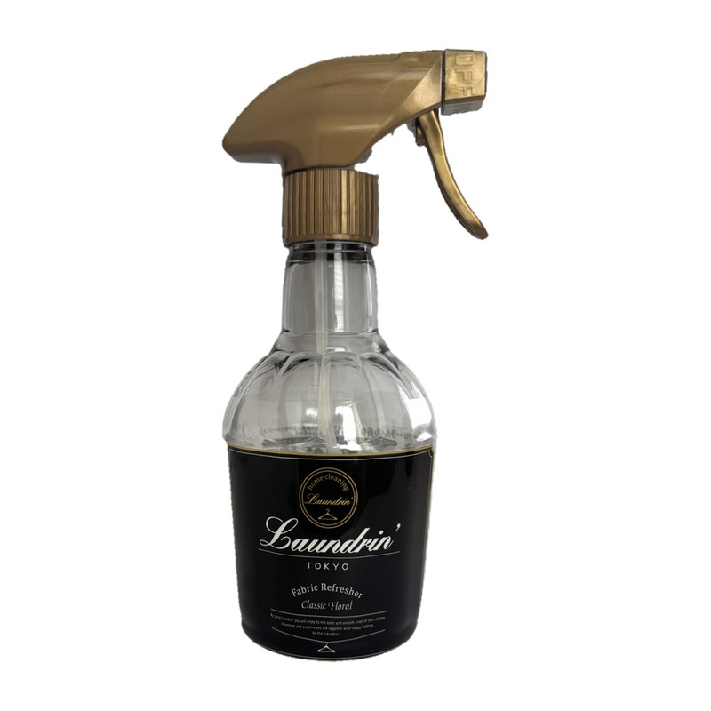
란도린섬유탈취제 클래식 플로랄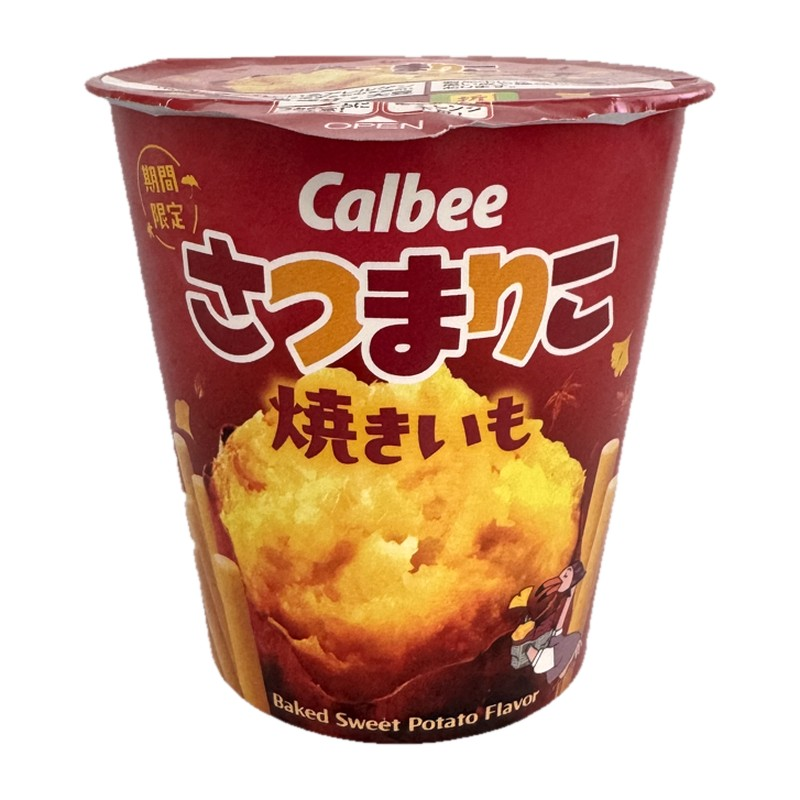
칼비사츠마리코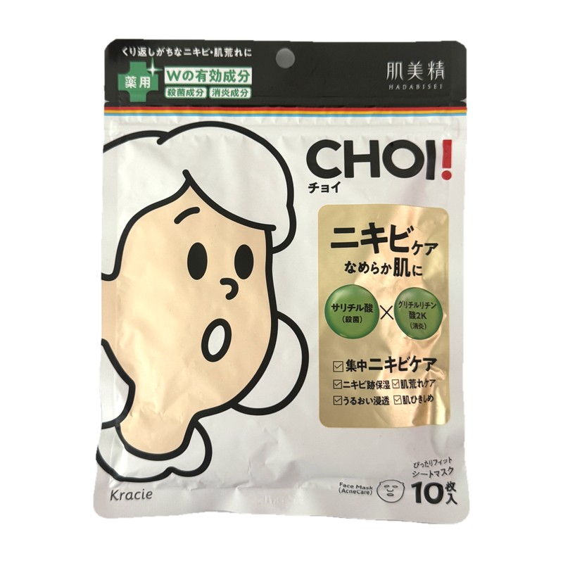
하다비세이CHOI 약용 마스크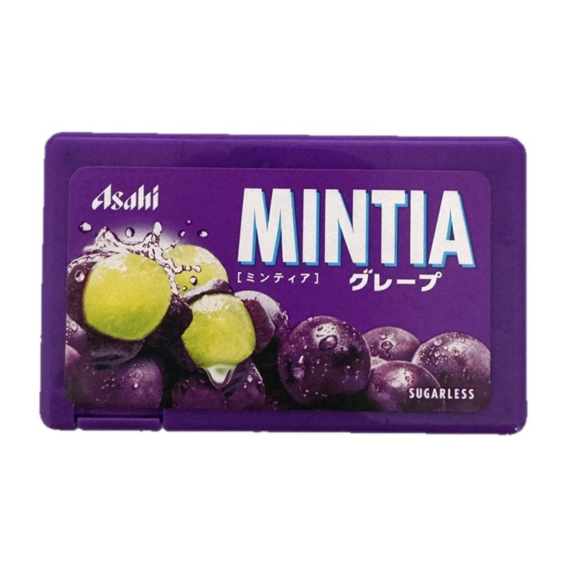
민티아포도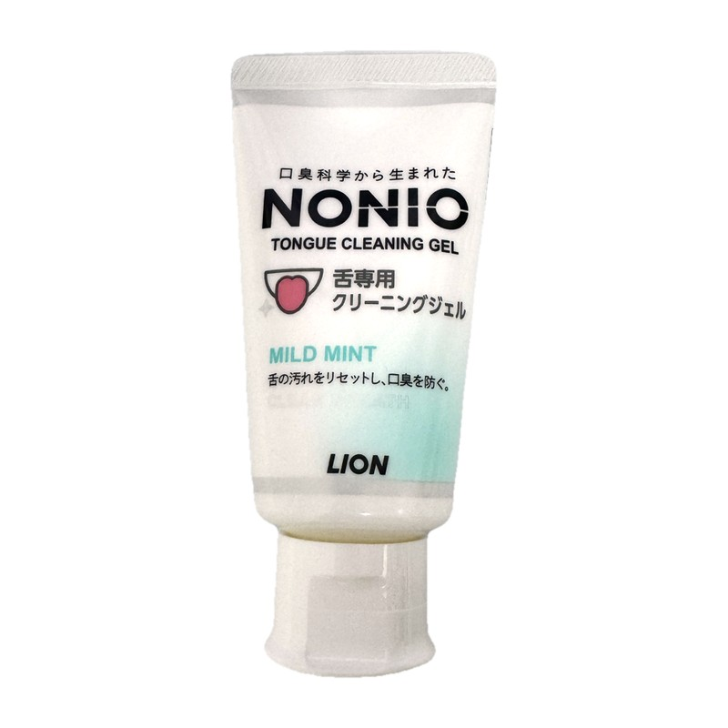
라이온노니오 혀 클리닝 젤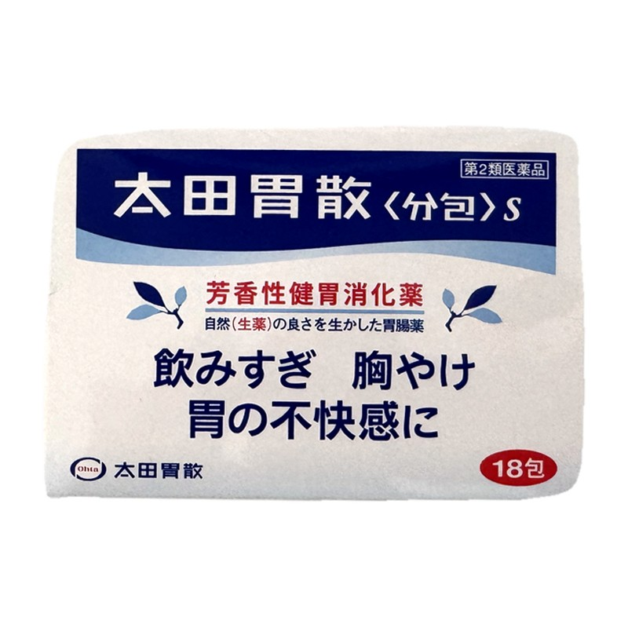
오타이산오타이산 S 18포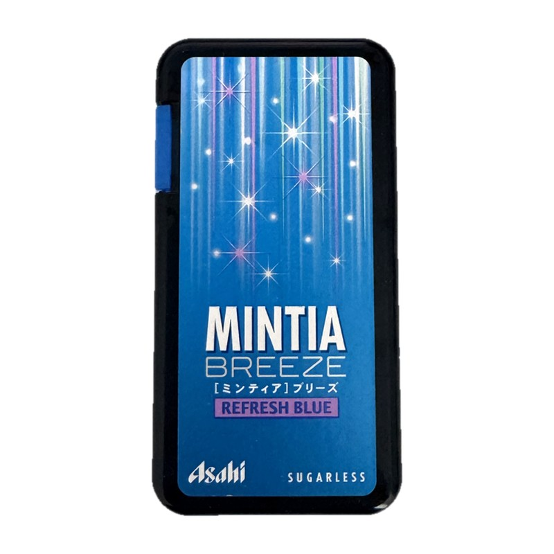
민티아브리즈 리프레시 블루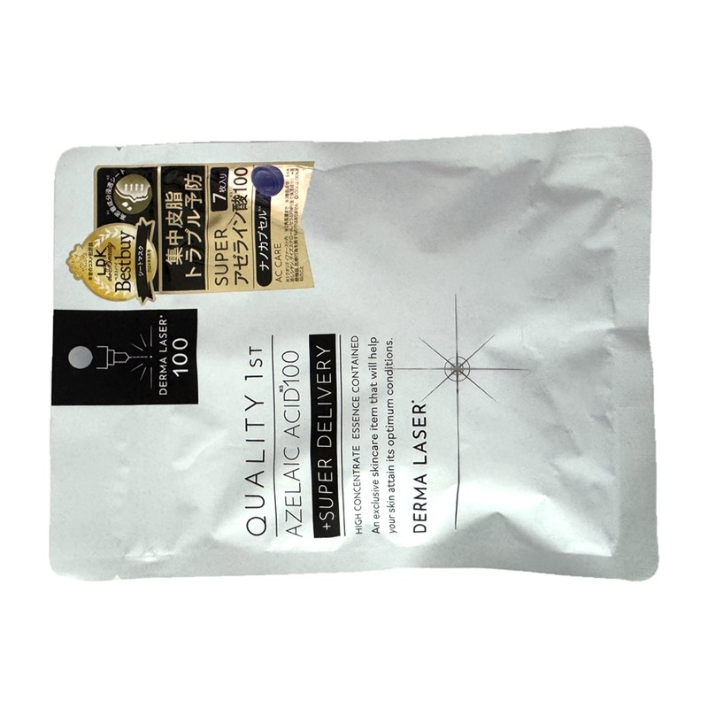
퀄리티 퍼스트더마 레이저 AZ 마스크찍으면 바로,
한국어로 알려줘요
포장 뒷면의 바코드만 찍으면 돼요. 한국어 상품명과 설명, 일본 현지 가격이 한 화면에 나와요.

일본에서 살까,
한국에서 살까
같은 상품을 한국에서는 얼마에 파는지, 정식 수입품인지 직구로만 오는 것인지 나란히 보여 줘요.

떠나기 전에
살 것을 정해 두세요
카테고리와 인기 브랜드로 정리해 두었어요. 찜하고 장바구니에 담아 두면 매장에서 헤매지 않아요.

띡, 이렇게 써요
바코드 한 번으로 시작해 영수증까지 — 앱 화면 그대로예요.
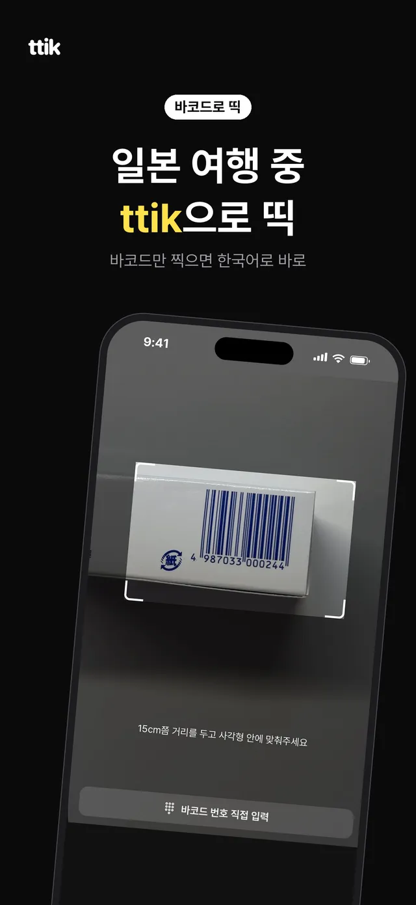
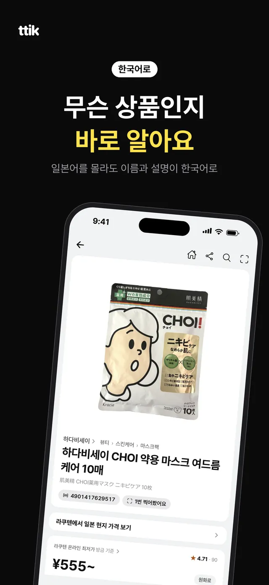
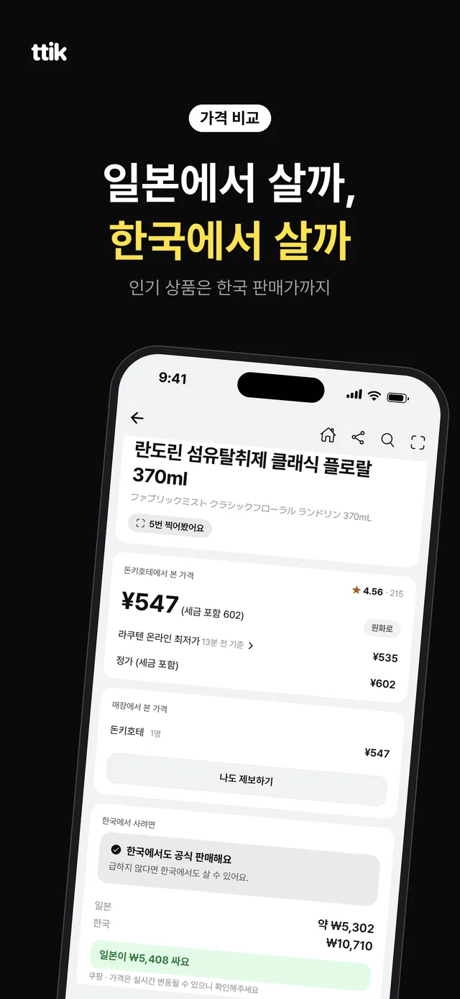
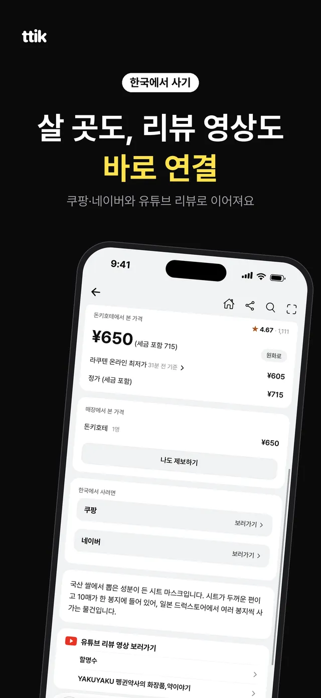
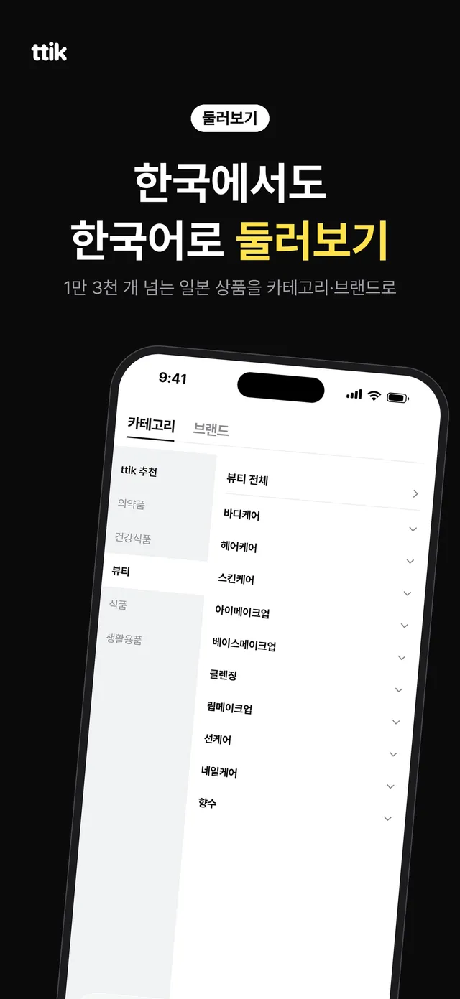
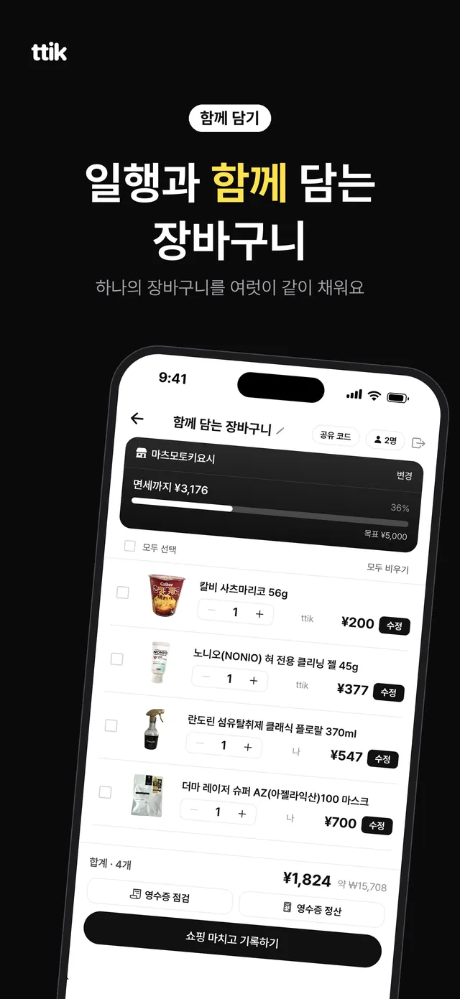
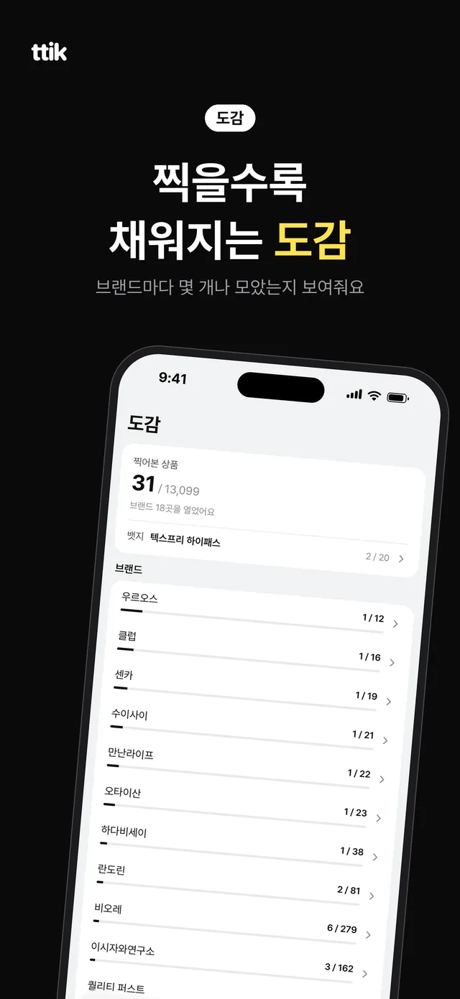
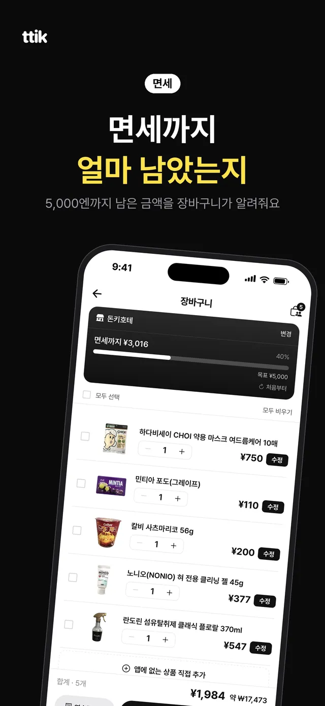
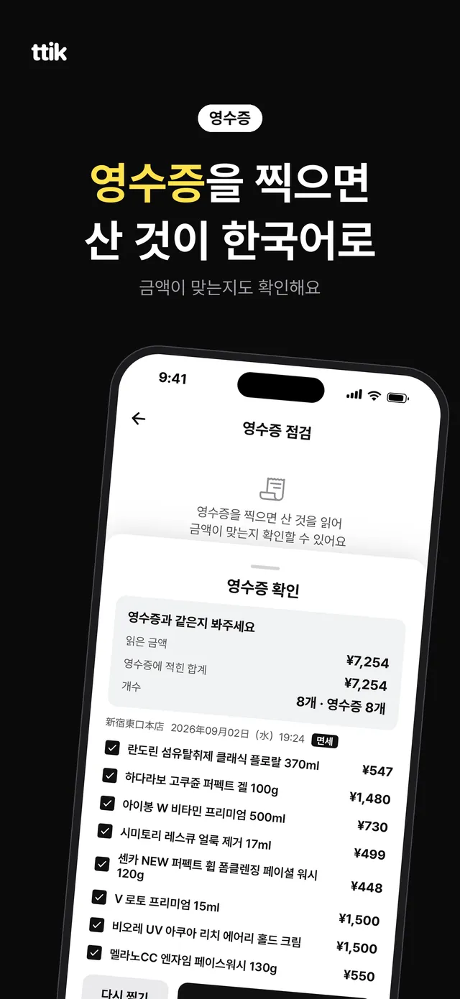
여행 전 · 여행 중 · 여행 후
일본 여행 전부터 다녀온 뒤까지 쓰는 앱이에요.
미리 정해두고 가요
일본 드럭스토어와 돈키호테에서 파는 상품을 브랜드와 카테고리로 정리해 뒀어요. 살 것을 찜해두고 장바구니에 미리 담아둬요. 한국에서 더 싸게 살 수 있는 것은 미리 걸러낼 수 있어요.
매대 앞에서 바로 확인해요
포장의 바코드를 찍으면 한국어 상품명과 일본 현지 최저가가 바로 나와요. 한국에서도 파는 제품인지 알려주니까, 무겁게 들고 오지 않아도 돼요.
다녀온 뒤에도
영수증을 찍으면 산 것이 쇼핑 기록으로 남아요. 써보고 마음에 든 제품을 한국에서 다시 살 때는 정식 수입되는지, 어디서 얼마에 파는지 알려줘요.
쇼핑에 필요한 건 다 있어요
매대 앞에서도, 계산대에서도, 집에 와서도 써요.
바코드 띡
포장의 바코드만 찍으면 일본어를 몰라도 무슨 상품인지 한국어로 나와요.
한국 가격과 비교
일본 현지 최저가와 한국 판매가를 나란히. 정식 수입인지 직구로만 오는지도요.
함께 담는 장바구니
일행과 하나의 장바구니를 같이 채우고, 누가 무엇을 담았는지 보여요.
면세까지 남은 금액
장바구니가 면세 기준까지 얼마 남았는지 알려줘요. 바뀌는 면세 제도도 안내해요.
영수증 → 쇼핑 기록NEW
영수증을 찍으면 산 것이 상품 사진과 함께 기록으로 남아요.
홈 화면 위젯
앱을 열지 않고 홈 화면에서 바로 스캔·검색·영수증으로 들어가요.
가격은 어디서 가져오나요?
세 곳에서 모은 가격을 함께 보여 드려요.
어떤 상품이 들어 있나요?
일본 드럭스토어·돈키호테에서 많이 사는 상품부터 채우고 있어요.